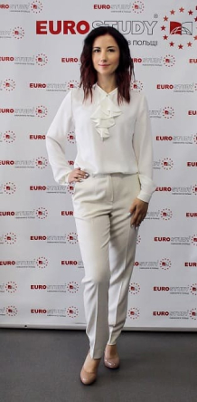
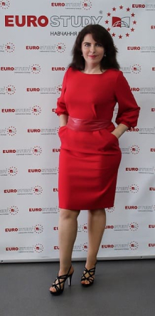
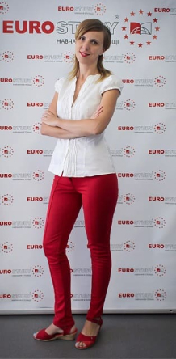
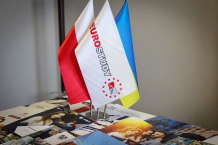
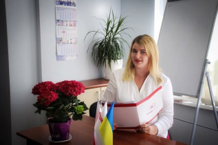
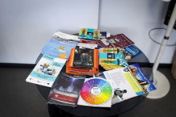
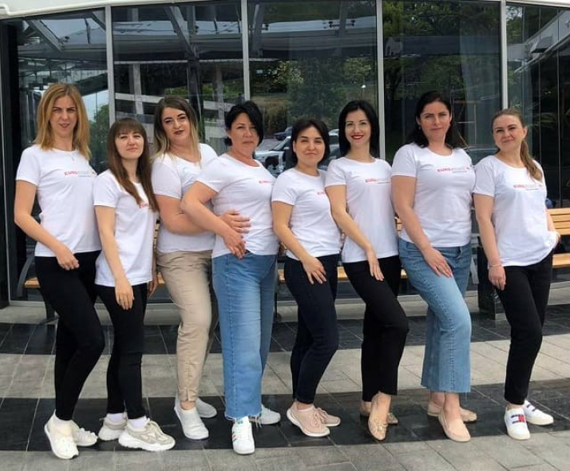

О компании
О компании “Евростади” в фактах и цифрах:
Нашей компании 9 лет!
Начали мы свою деятельность в 2011 году с аренды небольшого офиса на 1 комнату. Работа не покладая рук, позволила нам уже через 3 месяца взять в субаренду еще одну комнату в офисе, а спустя полгода переехать в свой отдельный офис.
Образование в Польше было новинкой и практически никто не знал, как все происходит, какие гарантии поступления, с какими ВУЗами стоит сотрудничать, как все организовать, но благодаря нашей команде, стараниям и приобретенному опыту у нас всё получилось!
Теперь мы можем с гордостью сказать, что смогли многого добиться за эти 9 лет:
- Евростади – единственная компания в Украине, которая помогает абитуриентам Украины поступить в государственные ВУЗы Польши!
- На сегодня при помощи Евростади можно поступить в более 80 ВУЗов и 10 Техникумов Польши
- Мы помогаем умным и талантливым детям поступать на бесплатное обучение на конкурсной основе в государственные ВУЗы Польши.
- К нам обращаются студенты, желающие поступить на бесплатное обучение с Картой поляка и мы с удовольствем им в этом помогаем.
- Мы помогли реализовать мечты более 2500 абитуриентов, которые за время деятельности нашей компании поступили и получили высшее и среднее те хническое образование в ВУЗах и Техникумах Польши!
- Наши курсы польского языка помогли более 4000 обучающимся (в Украине и Польше) не только получить образование в Польше, но и найти работу и вы ехать в Польшу на ВНЖ и ПМЖ.
- Благодаря высокому уровню преподавания и подобранному материалу для обучения, 99% обучающихся на наших курсах, по подготовке к собеседованию с ко нсулом Польской Республики в Украине, получили Карту Поляка.
- Более 3000 ВИЗ в Польшу было оформлено для студентов, а также их родителей, которые сопровождали детей на обучение.
- Два раза в год мы организуем Образовательный тур по ВУЗам Польши для абитуриентов и их родителей. Данная поездка помогает поближе познакомиться со страной, городом и ВУЗом, в котором будет обучаться будущий студент.
- Каждые летние и зимние каникулы мы организуем отдых в лагере “ADVENTURE CAMP” для учеников старших классов и студентов (14-18лет). Где дети мо гут активно отдохнуть, познакомиться с культурой, традицией Польши и выучить польский язык с носителями языка.
- Евростади – это сплоченная команда профессиональных менеджеров-консультантов, преподавателей и руководителей компании!



Желаете получить качественное европейское образование? Отправляйте заявку на поступление!
Контакты